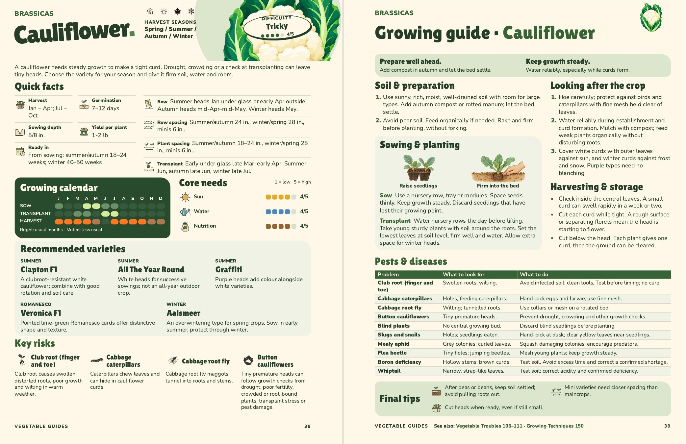

Cauliflower
Pages 38–39, checked 5 November. The usual two checks are complete.
Quick facts: seasonal timings and spacing use a wider right-hand column; “Ready in” spans the left-hand column beneath the shorter facts. Both editions now share the same arrangement. All nine facts and icons are retained.
pH and liming: the general acidity and liming instruction is removed from Soil & preparation. The specific advice for club root, boron deficiency and whiptail remains.
All other wording, five varieties, ten selected pest entries, original illustrations and text sizes are retained.

Approved by John on 5 November. Both editions have been checked as actual PDFs; the main book remains separate.